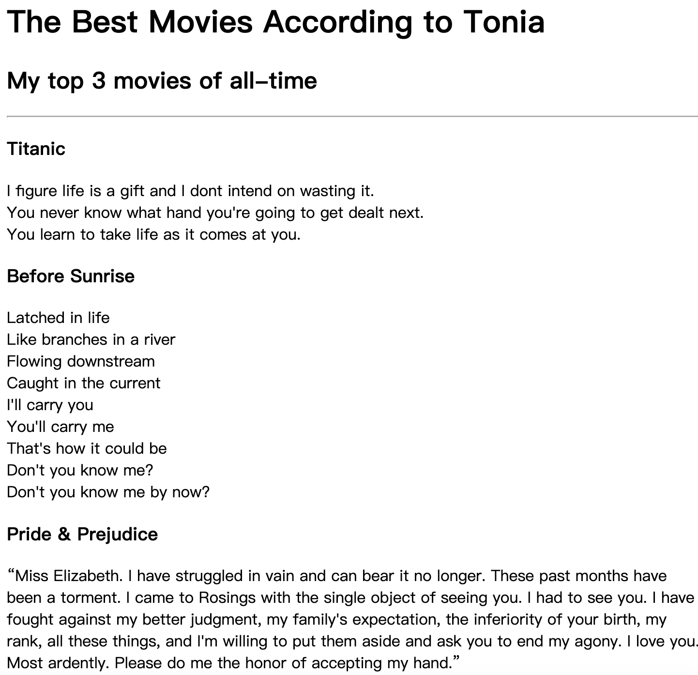
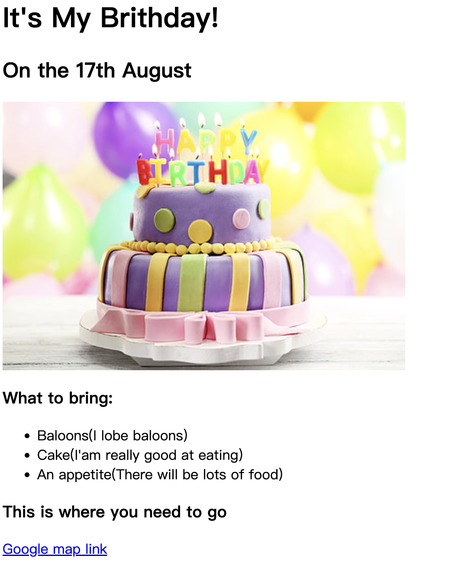

Tonia
Summary
Hello, my name is Tonia.
I am from Beijing, China, and I am currently a first-year master's student in IT program at the University of Auckland.
Prior to this, I worked as a editor in publishing industry for several years, driven by my passion for literature.
Due to some personal and family reasons, I decided to switch my career to IT, which is a new challenge for me.
However, I am determined to put in my best effort.
I look forward to learning and growing in this field, and I kindly ask for your guidance and support in my studies.
Thank you!
Education
- Bachelor of Communication engineering - University of Hust (Huazhong University of Science and Technology) (2012-2016)
- Master of Information Technology - University of Auckland
Work Experience
Skills
- Languages: Mandarin (Native), English (Proficient)
- Programming Languages: Java(Proficient), Web desgin(Proficient), MATLAB (Proficient), Python (Proficient), R (Intermediate), SQL (Intermediate)
Awards and Certifications
- Datang Technology Certified Engineer (2015)
- Senior Middle School Teacher
Qualification Certificate - Maths (2015)
- Second-level Certificate for National Computer Rank Examination - C
- Programming Design (2015)
- Certificate of Accounting Professional (2013)
My Projects


Other
About Me
Contact Me